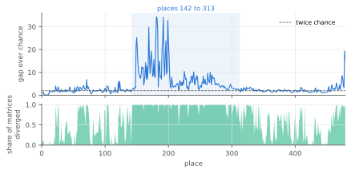
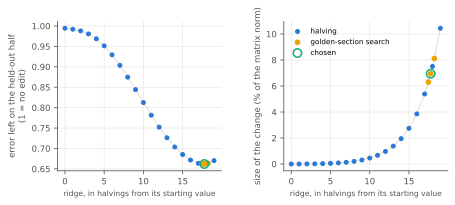
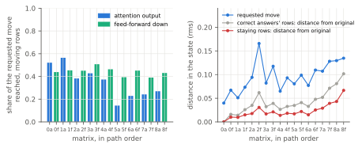
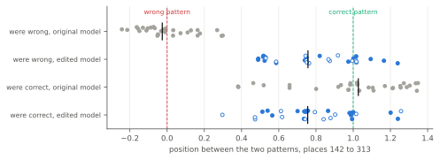

A quick note before you read. This is work in progress, the third report in this series, and not a finished paper. It covers one construction and its first run. The round of experiments it belongs to is being redone with what this run taught us. The samples are small, so please read the numbers as early signals. Any comments, big or small, are welcome.
Our first report fixed a reasoning mistake in Gemma 4 E2B by editing one weight matrix, with a change computed from one correct answer and one wrong answer. Those edits held on the problems they were built from and did not carry to new ones. Here we build the edit from many answers. We record the model's internal computation for 30 answers that make one mistake, subtracting an energy that should be added, and for 30 answers that do not. We align the 60 recordings by what they compute and measure where the two groups differ by more than chance. We then solve, one weight matrix at a time along the depth of the model, for the change that moves the wrong answers' own computation to the correct side over that stretch and holds it everywhere else. There is no training run and no answer key. The first run changed 18 matrices in 43 minutes on one GPU. Answering on its own, the edited model stops making the mistake in 29 of the 30 answers, and 17 of them become fully correct. It also corrects 7 of 21 wrong answers to questions outside the fit. It breaks 12 of the 30 correct answers, and three further edits built to protect them did not protect them. We describe the construction in full, report every result, and list the attempts that failed.
When a language model reasons wrongly, the usual fix is more training. Our first report [9] tried something narrower: change the weights directly, with a change computed from the model's own behaviour. Four edits to one matrix of Gemma 4 E2B fixed a specific mistake in an energy problem and, by the fourth, left the model's correct answers and ordinary text almost untouched. None of them improved new questions.
We think the reason is where those edits came from. Each took its direction from a single pair of answers, one right and one wrong, at one step, in one matrix chosen beforehand. The idea behind the work asks for more than that. While a model runs, the signal for each token passes through the network one operation after another, and we call the record of how it changes a trace. Our hypothesis is that answers which use the same skill share part of their trace, that correct and wrong answers part over some stretch of it, and that closing the gap between them over that stretch repairs the skill and not just one answer.
Testing that takes three things round one did not have. Answers have different lengths and different words, so there has to be a way to say which moment of one answer corresponds to which moment of another. Two groups of answers always differ somewhat, so there has to be a measure of which differences are real. And a difference in the trace has to be turned into a change of weights, across many matrices that feed each other.
In this report we supply all three for one mistake and run the result once. We align 60 answers by their computation alone and find one connected stretch where the two groups differ by about six times what chance would give (Section 4). We then build what we call the path edit (Section 5). Every position of every wrong answer is given a target for the state the model should be in right after each matrix has acted: moved towards the correct group where the groups differ, and unchanged everywhere else. Each matrix's change is found with the model's own arithmetic, and the matrices are solved in the order the signal meets them, each on the inputs the earlier changes produce.
The first run was stopped after 18 of 70 matrices. The model it produced, answering on its own, adds the energy it used to subtract in 29 of 30 answers. Seventeen of the 30 become fully correct, and so do 7 of 21 wrong answers from round one that the fit never saw. The edit has no protection and breaks 12 of the 30 correct answers. The rest of this round tried to protect them and did not succeed, and we report how (Section 7).
Editing weights. ROME [1] changes one matrix so that one input maps to a new output. MEMIT [2] spreads a change over several layers, because changing an early layer changes what later layers receive. Our path order answers the same problem. AlphaEdit [3] protects chosen inputs by allowing only changes that leave them untouched. We protect by fitting: positions that should not move are given their original state as a target.
Differences between groups. Steering methods [4, 5] subtract the average internal state of one set of prompts from that of another and add the result while the model runs. Our gap is also a difference of two averages. It is taken along an aligned path instead of at one position, it is reduced by what chance explains, and it is written into the weights.
Alignment. Speech recognition compares recordings spoken at different speeds by dynamic time warping [10], which matches two sequences in order and lets either one stretch. We use it to line up answers.
Fitting. The change of each matrix is a least-squares fit with a ridge penalty [11], solved by conjugate gradients [12]. The strength of the penalty is found with golden-section search [13].
Side effects. Edits often change more than intended [6, 7]. Round one measured this on one matrix. Here it is the main open problem.
Model. We use the instruction-tuned Gemma 4 E2B [8] (35 layers) at 16-bit (BF16) precision, running in llama.cpp on one RTX 5080, with a recorder that copies internal values without changing them. Decoding is greedy: the model always picks its top-scoring token, so every run is exactly repeatable.
Task. The questions are the family used in round one. An object starts moving, goes down a slope, loses some energy on a rough patch, then climbs. The model has to give the available energy, the required energy and a verdict. One example:
The mistake. The correct calculation adds the energy gained on the descent: 64 + 40 − 13 = 91 J available, 20 J required, YES. The mistake we study subtracts it: 64 − 40 − 13 = 11 J, NO. This is a different mistake from the one in round one's source pair, where the descent was added to the climb. We group wrong answers by their first wrong calculation and keep the groups apart.
Scoring. A complete answer has the right available energy, the right required energy and the matching verdict. The same judge reads the original and the edited answer. Every answer that was not complete after an edit was also read in full for its first error.
| Set | Size | What it is | Role |
|---|---|---|---|
| Overlap, wrong | 30 | Answers that subtract the descent | Compared and fitted |
| Overlap, correct | 30 | Complete answers to the same kind of question, with the same spread of numbers | Compared, not fitted |
| Round one | 28 | Round one's main questions: 21 answered wrongly and 7 correctly | Not in the overlap or the fit |
Each token is carried through the model as a list of 1,536 numbers, the residual stream. Each of the 35 layers adds to it three times (attention, feed-forward and a per-layer embedding branch), so a token passes 105 additions, which we call merges. At each merge we record how the direction of the stream turned. The trace of an answer is that record for every token the model generated.
To compare answers we need to know which steps correspond. We take the answer of median length, 480 steps, as a reference and call its steps places. Every other answer is matched to it by dynamic time warping [10]: two steps are alike when their turns at all 105 merges point the same way, and the matching keeps the order of both answers. No token, number or word is used. It is the way one compares performances of the same piece played at different tempos, by what is played and not by the clock. All 30,546 generated steps of the 60 answers are placed.
At each place p and each point k of the model we average the correct answers and the wrong answers separately. We call the two averages the correct pattern c̄ and the wrong pattern w̄, and their squared distance the gap:
Two averages of 30 answers differ even when the groups do not, because answers vary. The expected size of that difference is
where s2 is the variance of a group's answers around their average at that place and point, and n = 30 is the size of the group. We call C chance. Two halves of one group differ, on average, by 2C, so we say the groups have diverged at (p, k) when G > 2C. Where they have, the part of the gap that chance does not explain is
which we call the shared part. A gap ten times chance keeps 0.9 of itself.
As a second check, which needs no formula for chance, we split each group into two halves with no answer in common, compute the gap from each pair of halves, and compare the directions of the two gaps.

The two patterns run together, part over one stretch, and come back (Figure 1). Over places 142 to 313 the gap in the turns is 5.8 times chance, and the two halves agree on its direction with a cosine of 0.825. Measured on the state after each matrix, the gap over the same stretch is 4.8 to 9.3 times chance (median 5.7), and 96% of the place-and-matrix cells have diverged. Outside the stretch the gap is about twice chance and 44% of the cells have diverged. The gap is present at every depth, including layer 0.
Three cautions apply. The alignment is a proposal about which moments correspond. The 60 questions are variations of one problem, so the answers are less independent than the chance estimate assumes. And part of the gap is the words themselves: around the point where the answers handle the descent, the two groups begin to write different sentences, and from there the model reads different text in each group. We do not separate the two.
The path edit changes two matrices in each layer: the attention output matrix and the feed-forward down projection. These are the matrices whose output is written into the stream. There are 70. An attention output matrix maps 2,048 numbers to 1,536, and a feed-forward down projection maps 6,144 to 1,536.
The output of each of these matrices is normalized, scaled and added to the stream (Figure 2). For one position, let x be the input of the matrix, W the matrix, h the stream before the addition, and g the 1,536 learned scales that follow the normalization. Then
where rms(y) is the root mean square of y, ⊙ multiplies element by element, and d has length one. We call d the state after the merge. It is the direction of the stream, which is what the next operation reads, since every operation normalizes its input.
We aim the edit at d and not at the turn of the merge, for two measured reasons. At the first merge the gap of the turns (0.253) is almost entirely the gap of the token embeddings (0.254), which no weight produces; the gap of the state after that merge is 0.043. And the gaps of the turns do not add up to the gap of the state. Delivered in full at every merge, they would leave the state further from the correct pattern than no edit at all at 21 of the 70 matrices, from the feed-forward of layer 14 on. The difference is the one between steering and heading: copying another driver's steering movements does not give their heading when the crosswinds differ.
We call one position of one answer, seen at one matrix, a row. A row r has an input xr, a stream hr and a target tr for its state. Let d0r be the row's state in the original model. For a generated step of a wrong answer aligned to place p, at a matrix k where the groups have diverged,
and for every other row, including every position of the question, tr = d0r. A step aligned to several places takes the average over them.
The fit of each matrix uses every position of the 30 wrong answers: 16,423 generated steps and 5,160 question positions, 21,583 rows in all. Between 8,829 and 10,354 of them, depending on the matrix, are asked to move. The move is small: 0.04 at the first matrix and 0.13 at layer 8, where d has length one. The 30 correct answers (19,282 rows) are read at every stage and are not fitted. This edit has no protection, as edit A had none in round one.
We fit the rows that should stay because a matrix acts on every input it receives. Section 8.2 describes four earlier attempts that fitted only the rows where a change was wanted. Those edits changed the model almost as much where nothing was asked.
A small change ΔW of the matrix changes the state of row r, to first order, by
where Py = I − ŷŷ⊤/1536 with ŷ = y/rms(y), and Pm = I − dd⊤. Each factor has a plain meaning. Py removes any change in the size of y, which the normalization undoes, as a limiter undoes a louder input. diag(g) weighs each of the 1,536 outputs by its learned scale. Pm removes any change along the stream itself, which lengthens the stream without turning it. The divisor says that the larger the stream is next to the matrix's contribution, the less a change of the matrix turns it. The operator is different for every row.
The change we want is the one that minimizes
over the N fitted rows, where dr(W + ΔW) is computed with Equation 4 at the changed weights, and λ is a ridge penalty that pulls the change towards zero. The first term is evaluated on the model's own expression, not on its linear approximation.
We minimize Equation 7 by preconditioned conjugate gradients [12]. At each iteration we compute the exact gradient at the current weights, turn it into a search direction S that does not undo the earlier steps, and take a step of size
where R is minus half the gradient. This is the minimum of the local quadratic along S. The step is kept only if Equation 7, evaluated at the new weights, decreased. Otherwise it is halved until it does. The preconditioner is a closed-form approximation of the system that factors into a part over the inputs and a part over the outputs. It shapes the search direction and is never used as the answer. When a search direction fails, the preconditioner is rebuilt at the current weights. The solve ends when no step lowers the objective in 32-bit arithmetic.
There is therefore no learning rate to choose. In this run the final solve of each matrix took 25 to 92 iterations, with at most 4 shortened steps and at most 2 rebuilds.
The ridge λ is the one strength in the fit. We choose it by held-out error. The 30 wrong answers are split into two halves. For a candidate λ we fit the change on one half, round it to BF16, and measure the first term of Equation 7 on the other half; then the reverse. The candidate's score is the sum, relative to making no change.
The search starts at a λ equal to the largest eigenvalue of the preconditioner's system, where the change is negligible, and halves λ for as long as the score improves. It then narrows between the neighbours of the best candidate by golden-section search [13], which needs one new fit per step, and stops when its two inner candidates differ by less than BF16 rounding changes the score. Making no change is itself a candidate and wins when nothing beats it. Figure 3 shows the search for the first matrix: 23 candidates, ending 17.8 halvings below the starting value, where the fit leaves 0.66 of the error on the held-out half.

Across the 18 matrices of this run the search tried 17 to 26 candidates. The chosen changes leave 0.62 to 0.94 of the error on the held-out half, and the changes fitted on the two halves have a cosine of 0.41 to 0.66 with each other. The score need not have a single minimum, and the search follows one branch. The ridge is chosen on the wrong answers and their original text only.
We solve the matrices in the order the signal meets them: attention then feed-forward of layer 0, then layer 1, and so on. Before each matrix we pass the text of all 60 answers through the model as it currently stands, and read that matrix's inputs and streams. The matrix is then fitted to the targets, starting from the states the rows have now. So a matrix is asked for what the earlier ones left undone, and to bring back rows they moved by mistake. We round the result to BF16 and write it into the model only if the rounded matrix lowers the first term of Equation 7 on the fitted rows.
The order follows from a measurement. Where the groups have diverged, the inputs that arrive at each matrix also differ between the groups, by 3.7 times chance. Changing one matrix therefore changes what the next one receives. MEMIT [2] handles the same dependence between layers.
| Fine-tuning | Path edit | |
|---|---|---|
| Examples | Text with the desired output | The model's own answers, 30 wrong and 30 correct. No desired output is given. |
| Target | The next token, at the output | The state after each matrix, read from the overlap (Equation 5) |
| Gradient | Passed backwards through every layer | Through one matrix and its own merge (Equation 6) |
| Step size | A learning rate, chosen | Computed at every step and checked (Equation 8) |
| Regularization | Weight decay, chosen | A ridge towards the original weights, chosen per matrix on held-out answers |
| Passes | Many | One along the path; each matrix is solved once |
We ran the construction once. Its rule and its prediction were written down before any answer of the edited model existed. What is checked is the path of computation: the traces of the edited model's own answers, set against the two patterns. The answers are the evidence that the capability was restored. Measurements made on given text while building are part of the construction and are reported as such.
Each matrix reached part of what it was asked: between 14% and 56% of the requested move on the moving rows, with a median of 43% (Figure 4). The rows asked to stay moved 0.43 times as far as the moving rows at each matrix, and that movement accumulated along the path. Before the 18th matrix, the wrong answers' staying rows were 0.067 from their original state and the correct answers' rows 0.10, against a requested move of 0.13.

We stopped the build after 18 matrices, layers 0 to 8. At the 19th, nearly every solver step had to be shortened and one candidate took minutes instead of seconds. A reading of the partly edited model on the original text put the moving rows at 0.55 of the move along its direction and one whole move away to the side, which is 1.39 times further from their targets, in squared distance, than before any edit. The 18 matrices changed by 5.3% to 12.2% of their norm and took 43 minutes in total, including the passes that read the model before each one. The other 52 matrices are the original model's. We tested this model as it stood.
The edited model answered the 60 questions of the overlap and round one's 28 questions on its own (Figure 5). For the block of Section 3, the original and the edited model write (formatting marks removed):
The targeted calculation. Before the edit, 30 of the 60 answers add the descent energy and 30 subtract it. After the edit, 55 add it. Of the 30 that subtracted it, 29 now add it.
Complete answers. 17 of those 30 are complete. The other 12 that now add the descent make a different error later in the answer.
Damage. 12 of the 30 correct answers are no longer complete. Four of them now subtract the descent.
Outside the fit. Round one's 28 questions were not in the overlap or the fit. 7 of its 21 wrong answers become complete, where none was, and 3 of its 7 correct answers stay complete.
New errors. The edited model makes errors the original did not, in both groups alike. It reports the energy left after the climb as the available energy, adds the cost of the climb to the remaining energy, or computes the kinetic energy as twice or half its value.
Text. No answer keeps its text. 49 of the 60 open with a different sentence, and the median length rises from 529 to 578 steps for the answers that were wrong and from 438 to 544 for those that were correct.
We recorded the 60 answers of the edited model, aligned them to the same places by their computation, and measured each against the original patterns, with 0 at the wrong pattern and 1 at the correct one (Figure 6).

Over places 142 to 313, the answers that were wrong moved 0.79 of the way to the correct pattern. All 30 moved, from between −0.24 and 0.30 to between 0.49 and 1.24. They also moved 1.04 gaps in directions that lie along neither pattern, so in full distance they end 1.15 times as far from the original correct pattern as they began. In the terms of a walk to a hut one kilometre north, they ended 790 metres north and a kilometre east.
The correct answers moved 1.27 gaps. Both groups end at the same median, 0.76, and are 0.54 as far apart as before. After the edit the two groups compute alike, and they answer alike: 17 and 18 complete of 30.
Position along the gap goes with the calculation. The five answers that still subtract the descent lie at 0.30 to 0.62, and the 55 that add it at 0.49 to 1.26, with a median of 0.79. In 91% of pairs, the answer that adds the descent lies nearer the correct pattern. Position does not separate complete answers from incomplete ones (medians 0.75 and 0.79): the new errors are of a different kind from the one the gap measures. We have not shown that the sideways movement causes them. The changed wording alone can move a trace sideways.
The reading that stopped the build said the moving rows were further from their targets than before any edit. The model it described is the one that corrects the calculation in 29 of 30 answers. That reading measures the computation the edited model performs on the tokens of the original answers. When the edited model answers on its own it performs a different computation, already from the fourth step in 40 of the 60 answers. The rows of the build therefore describe a computation the edited model does not perform when it answers. The traces of its own answers (Section 6.3) are the measurement that does.
Round one protected its first edit in three further steps. B shielded what A broke, C kept A's repairs while cancelling its damage, and D made the edit ignore ordinary text. We ran the same ladder on the path edit, changing one thing per rung, and each model was tested as in Section 6 (Table 3).
| Rung | Change against A | Wrong, now complete | Correct, still complete | Available right | Along | To the side |
|---|---|---|---|---|---|---|
| A | The path edit of Section 5 | 17 of 30 | 18 of 30 | 17, 18 | 0.79 | 1.04 |
| B | The 12 correct answers A broke are added to the fit, asked to keep their state | 4 | 9 | 5, 13 | 0.63 | 1.00 |
| C | Starts from A's model; asks for the original state on the answers A damaged and A's state on the answers A repaired | 12 | 16 | 13, 17 | 0.87 | 1.44 |
| C, damaged only | C with only the damaged answers in the fit | 11 | 14 | 16, 17 | 0.95 | 1.16 |
| D | A rebuilt, with the size of each change measured by its effect on eight ordinary requests | 7 | 7 | 23, 23 | 1.05 | 0.78 |
B. Of the 12 answers B holds, 4 are complete, and 13 of the 18 correct answers it does not hold broke. The held rows are rows of the original text, and 51 of the 60 answers of B's model leave that text at the fourth token.
C. At the start of an answer, the rows of the damaged answers and the rows of the repaired answers are almost the same inputs: between 0.0% and 0.8% of a damaged answer's input lies outside the span of the repaired answers' inputs. A matrix cannot map one input to two outputs, and the fit satisfied neither request.
D. Its traces are the best of the round. Its wrong answers lie 1.05 along the gap with 0.78 to the side, and 25 of the 30 end nearer the original correct pattern than they began, against 11 for A. The available energy is right in 23 of 30 answers in both groups. But 31 of the 60 answers now state the required energy as climb plus descent, and only 7 of each 30 are complete.
Fractions of A. We also applied A's change at 0.27, 0.58 and 0.79 of its size. These models complete 7, 5 and 8 of the wrong answers and 15, 8 and 9 of the correct ones, against 17 and 18 for the whole edit.
On all five models of Table 3 the targeted calculation is repaired in 27 to 30 of the 30 wrong answers. The number of complete answers among them ranges from 4 to 17. No rung meets the goal of the ladder: every wrong answer corrected, no correct answer broken, and little effect on other text.
The overlap is enough to aim an edit. The target came from the difference between two groups of the model's own answers. No label and no answer text was used. The edit changed the intended calculation in 29 of 30 answers, and in answers to questions outside the fit. Where an answer's trace lies along the gap goes with which calculation the answer writes.
The edit changes one calculation and does not control the rest of the answer. All five models of Section 7 repair the calculation, and they differ fourfold in complete answers. Part of that difference is noise. C's model and A's differ by at most 3.4% of A's change in each matrix, and they disagree on whether 20 of 88 answers are complete. Differences of that size between rungs carry little information.
Positions that should not change have to be in the fit, and that is not sufficient. Fitting them is what let this edit reach the calculation at all (Section 8.2). They still moved 0.43 times as far as the rows asked to move.
Asking each matrix for the whole gap compounds. Each matrix reached about half of its request and moved every other row a little, and the next matrix inherited both. Scaling the finished edit down afterwards did not reduce the damage (Section 7). This suggests that the size of each step has to be limited inside the build, where each matrix is fitted on what the earlier ones actually left.
Protection fitted on the original computation does not hold. The edited models compute differently from the fourth step of an answer on, so rows recorded from the original answers no longer describe what they do. B held rows of a computation its model did not perform. C asked one input for two outputs. D reduced the effect on ordinary text and introduced a new error in the answers.
Four constructions preceded the one in Section 5. None repaired an answer: in each, the edited model failed before it reached the calculation. We describe them because each failure fixed one part of the final construction. They do not show that these ideas cannot work in another form.
The plain difference of the group averages. The first attempt fitted every input to the difference of the two group averages, in all 70 matrices at once. The attention matrices changed by a median of 52% of their norm, and the edited model no longer read the question. The shared part (Equation 3) comes from this failure.
Dividing by the learned scale. The second asked for the shared part of the gap of the turns and converted it to a matrix output by dividing by the learned scale. The request came to 64% of the attention output, where the move itself was 15% to 17% of the turn, and two thirds of it fell on the tenth of the outputs with the smallest scale. The exact operator (Equation 6) comes from this failure.
Fitting only where a change is wanted. The third and fourth made smaller requests, 3% of each matrix, and fitted them only on the places where a change was wanted. Where nothing was asked, the edit still changed the output by a quarter to two thirds of what it did where it was asked, and the model abandoned the calculation at about the ninth token. The rows asked to stay (Section 5.2) come from this failure.
All matrices at once. All four attempts sized every matrix on the original model's inputs and applied them together. In the one case we measured, the corrections added up to 1.5 times the gap in layers 15 to 19. The path order (Section 5.6) comes from this failure.
The turn as a target. The construction of Section 5 was first declared with the turn of each merge as its target. Adding those requests up along the path, before anything was built, showed that they would not close the gap of the state (Section 5.1), and the target was changed.
Where this leaves the hypothesis. The hypothesis says that closing the gap between the shared traces of correct and wrong answers fixes the mistake, and that the fix carries to questions the edit was not built from. This run gives evidence for both, for one mistake: the traces moved along the gap, the calculation changed with them, and it changed in answers outside the fit. The run also shows what the hypothesis does not promise. The same edit moved the correct answers as far as the wrong ones and broke 12 of 30, and nothing we tried kept them in place. Whether an edit that closes the gap can leave correct computation alone is the question for the next round.
This round is being redone with these results as its starting point. Two problems are open. The build asks each matrix for the whole gap and has no limit on its step. And protection that is fitted on the original model's computation does not hold once the edited model computes differently. The sealed questions stay closed until an edit meets the goal of the ladder.
Acknowledgements. The experiments were built and run with help from AI coding agents, working under my direction. Every number here comes from a saved record (a declaration written before each run, build logs, full answers and recordings), and I'm happy to share any of it.
| Item | Value |
|---|---|
| Model | Gemma 4 E2B-it, BF16 GGUF, 35 layers, stream width 1,536 |
| Engine | llama.cpp with a tensor recorder; the same program for the original and the edited model |
| Hardware | One RTX 5080 |
| Decoding | Greedy; 768-token limit |
| Overlap | 30 wrong and 30 correct answers; 30,546 generated steps and 10,319 question positions; 480 places; 105 merges per step |
| Matrices | 70 declared: attention output (1,536 × 2,048) and feed-forward down (1,536 × 6,144) of each layer. 18 built, layers 0 to 8 |
| Fitted rows | 21,583 per matrix: 16,423 generated steps and 5,160 question positions of the 30 wrong answers |
| Rows read, not fitted | 19,282 per matrix, the 30 correct answers |
| Size of the change | 5.3% to 12.2% of each matrix's norm, after rounding to BF16 |
| Build time | 43 minutes for 18 matrices |
| Symbol | What it is | Size | Source |
|---|---|---|---|
| x | Input of the matrix for one row | 2,048 or 6,144 | Read from the model as it stands |
| W, ΔW | The matrix and its change | 1,536 × 2,048 or 1,536 × 6,144 | Model file; the solve, rounded to BF16 |
| y | Output of the matrix, Wx | 1,536 | Computed |
| g | Learned scale of each output | 1,536 | Model file |
| h | Stream before the addition | 1,536 | Read from the model as it stands |
| m, d | Stream after the addition, and its direction (the state) | 1,536 | Equation 4 |
| d0 | The state in the original model | 1,536 per row | The same text through the original model |
| c̄, w̄ | Correct and wrong pattern | 480 × 70 × 1,536 | Group averages of the aligned states |
| G, C | Gap and chance | One per place and matrix | Equations 1 and 2 |
| σ | Shared part of the gap, where G > 2C | 0 to 1 | Equation 3 |
| t | Target state of a row | 1,536 per row | Equation 5 |
| A | First-order effect of an output change on the state | One per row | Equation 6 |
| λ | Ridge penalty | One per matrix | Held-out search, Section 5.5 |
| α | Step size of the solver | One per iteration | Equation 8, then checked |
Records. Each run has a folder under
studies/04-round-2-overlap/runs/ with its declaration, logs and result: state-overlap and
trace-overlap-complete-registered (Section 4), a2-path (Sections 5 and 6),
b2-path, c2-path, c2-protected, d2-path and
a2-path-steps (Section 7), and a2, a2-pattern, a2-sent and
a2-diverge (Section 8.2). The records of c2-path, c2-protected and
d2-path were not yet committed when this was written. The figures and numbers.json are
produced from these records by make_figures.py in this folder.